Unitats organitzatives i GPOs
Unitats organitzatives (UO) a Active Directory
Les unitats organitzatives (UO) a Active Directory són elements que permeten estructurar de manera lògica els diferents objectes d’un domini, com ara usuaris, grups, ordinadors i altres UO. Aquestes unitats ajuden a gestionar de forma eficient l'entorn, a diferència de la carpeta predeterminada "Users", que ofereix menys flexibilitat.
Una de les grans utilitats de les UO és que faciliten l’aplicació de polítiques de grup (GPO) adaptades a necessitats concretes, permeten delegar tasques d’administració a persones responsables d’un àmbit específic i ajuden a mantenir una jerarquia clara dins l’organització, especialment quan hi ha molts departaments o usuaris.
Els principals avantatges d’utilitzar UO inclouen:
-
Aplicar configuracions concretes a certs grups d’usuaris o dispositius
-
Assignar rols d’administració limitats a parts del domini
-
Classificar els recursos segons criteris com el departament, la funció o la ubicació
-
Augmentar el control i la seguretat de l’infraestructura de xarxa
Per crear una UO, cal obrir l’eina “Usuaris i equips d’Active Directory”, fer clic dret sobre el domini, i escollir l’opció “Nou” > “Unitat organitzativa”.
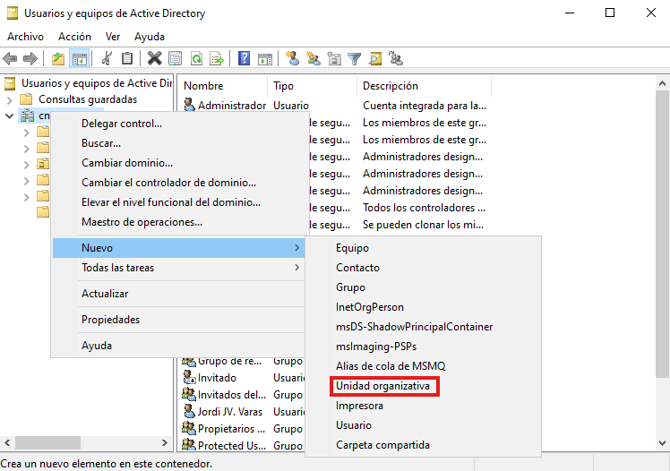
Les unitats organitzatives poden contenir al seu torn altres UO, permetent així una divisió més precisa i estructurada dels recursos dins del domini. Aquesta jerarquia facilita l'aplicació de polítiques específiques i el control delegat de manera molt més eficient.
Per exemple, si es vol aplicar una normativa de seguretat només als membres del departament de Comptabilitat, es podria crear una UO anomenada Departaments i, a dins, una subunitat anomenada Comptabilitat. Col·locant-hi els usuaris corresponents, qualsevol política de grup que s’hi defineixi només tindrà efecte sobre aquest col·lectiu.
Aquesta estructura afavoreix una administració més precisa, especialment en entorns amb múltiples divisions internes o necessitats específiques per àrea.
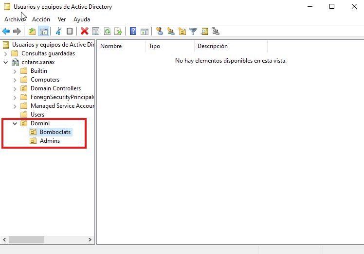
Dins d’aquestes UO, també podem crear usuaris i grups. Per exemple, podem crear dos grups: un anomenat Permissiva i un altre Restrictiva.
A continuació, creem dos usuaris i assignem cada un al seu grup corresponent. D’aquesta manera, podrem aplicar polítiques diferents segons el grup al qual pertanyin, donant més o menys permisos segons convingui.
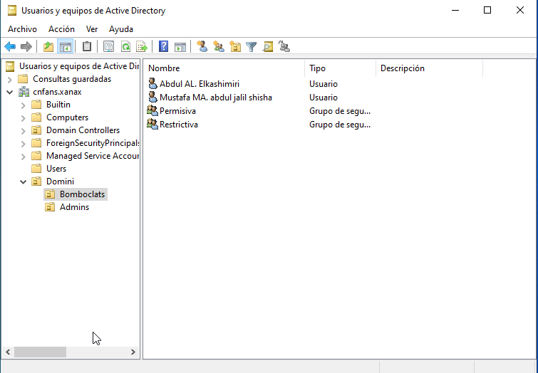
Configuracio GPOS
Que es una GPO?
Una GPO (Group Policy Object) és una eina que permet aplicar configuracions específiques a usuaris i equips dins d’un domini de Windows. Amb les GPOs, els administradors poden controlar múltiples aspectes del sistema, com la configuració del sistema operatiu, l’accés a funcionalitats, restriccions de seguretat, scripts d’inici de sessió, i molt més.
Són essencials per mantenir una gestió centralitzada i coherent dels equips en entorns d’empresa o xarxes educatives.
Desactivar l'accés a la línia de comandaments (CMD)
Obrir la consola de GPO
Per obrir la consola de gestió de polítiques de grup, ves al menú Inici del controlador de domini, escriu gpmc.msc i prem Enter; s’obrirà la consola des d’on podràs gestionar, crear i aplicar GPOs.
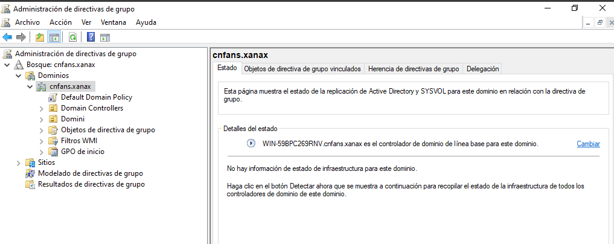
Per crear i editar una GPO per desactivar l'accés al símbol del sistema (CMD), segueix aquests passos:
-
Vincula la GPO a una Unitat Organitzativa (OU): Fes clic dret sobre la OU o el domini i selecciona: Crear una GPO en aquest domini i vincular-la aquí. Assigna-li un nom, com ara Desactivar CMD.
-
Editar la GPO: Fes clic dret sobre la nova GPO i selecciona Editar.
-
Navega a la ruta de configuració: Configuració de l'usuari → Polítiques → Plantilles administratives → Sistema.
-
Activa la directiva "Impedir l'accés al símbol del sistema": Busca la política Impedir l'accés al símbol del sistema, fes doble clic per editar-la i selecciona Habilitada.
-
Opció addicional (desactivar scripts CMD): Si vols més control, marca l'opció per desactivar l'execució de scripts CMD (fitxers
.bato.cmd). -
(Opcional) Impedir l'Editor del Registre: Si vols evitar que els usuaris modifiquin el registre, activa també la política Impedir l'accés a l'Editor del Registre.
Amb això, la GPO bloquejarà l'accés al CMD i, si ho desitges, també l'execució de scripts i l'Editor del Registre.
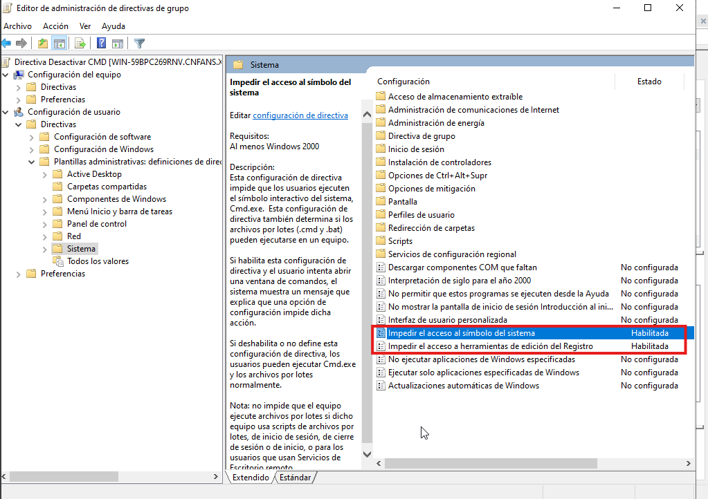
Comprovacio
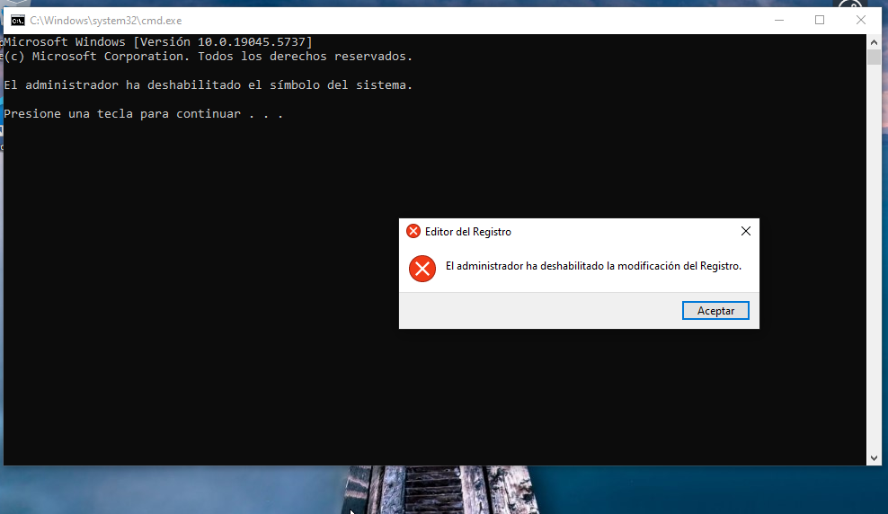
Modificació de la política de contrasenyes
A la part esquerra de la consola, desplega el teu domini i localitza la política Default Domain Policy. Aquí també podràs veure qualsevol GPO personalitzada que hagis creat prèviament per a UO específiques, com Administratius o Comptabilitat. Des d'aquesta ubicació, tens dues opcions:
-
Editar la política predeterminada: Fes clic dret sobre la Default Domain Policy i selecciona Editar per modificar-la directament.
-
Crear una nova GPO i aplicar-la a una UO específica: Fes clic dret sobre el domini o la UO que vols modificar, selecciona Crear una GPO en aquest domini i vincular-la aquí, i assigna-li un nom. Després, edita la nova GPO per configurar les polítiques que necessites.
Aquest procés et permet controlar de manera detallada les configuracions aplicades als usuaris o equips dins d'un domini o UO específica.
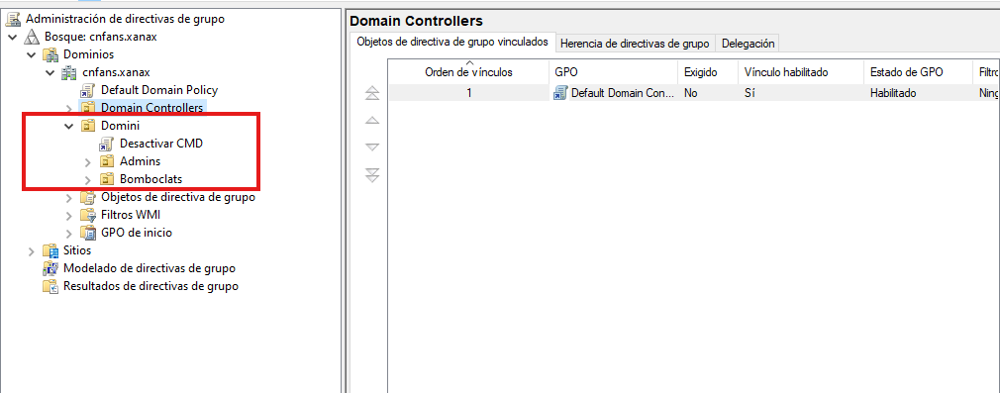
Fem clic dret sobre la política que volem modificar i triem l’opció Edita per obrir l’editor de polítiques de grup. Un cop dins, anem a Configuració de l’equip > Configuració de Windows > Configuració de seguretat > Polítiques de compte > Política de contrasenya.
Aquí podem ajustar diversos paràmetres relacionats amb la seguretat de les contrasenyes, com ara la longitud mínima, si cal que siguin complexes (majúscules, minúscules, números i símbols), el temps que triga a caducar, el període mínim abans de canviar-la de nou, o quantes contrasenyes anteriors es recorden per evitar reutilitzacions. Fem clic dret sobre la política que volem modificar i triem l’opció Edita per obrir l’editor de polítiques de grup. Un cop dins, anem a Configuració de l’equip > Configuració de Windows > Configuració de seguretat > Polítiques de compte > Política de contrasenya.
Aquí podem ajustar diversos paràmetres relacionats amb la seguretat de les contrasenyes, com ara la longitud mínima, si cal que siguin complexes (majúscules, minúscules, números i símbols), el temps que triga a caducar, el període mínim abans de canviar-la de nou, o quantes contrasenyes anteriors es recorden per evitar reutilitzacions.
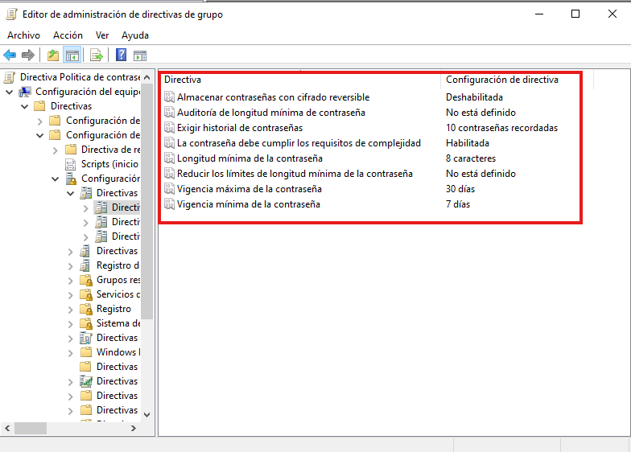
Un cop fetes les modificacions segons les necessitats, tanquem l’editor i la política s’aplicarà de forma automàtica amb el temps. Si volem aplicar-la de manera immediata, podem obrir el símbol del sistema i escriure la comanda:
gpupdate /force
Aquesta acció força l’actualització de les polítiques de grup. Les configuracions es faran efectives per a tots els usuaris afectats per aquesta GPO, i es poden verificar quan s’intenti canviar o establir una nova contrasenya, ja que es mostraran les noves restriccions definides.
Comprovacio
Per comprovar si la política de contrasenyes s’està aplicant correctament, podem forçar el canvi de contrasenya d’un usuari del domini. Quan aquest usuari iniciï sessió, el sistema li requerirà que defineixi una nova contrasenya, i haurà de complir amb els requisits configurats (com complexitat, longitud mínima o restriccions d’historial). Aquesta és una manera pràctica de validar que la GPO funciona com s’esperava.
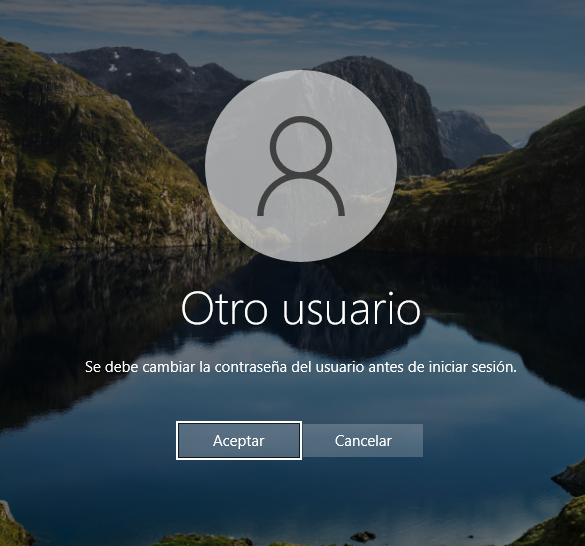
L’usuari introdueix una nova contrasenya i, si compleix amb tots els requisits definits a la política (com longitud mínima, complexitat o caducitat), el sistema la validarà i permetrà l’accés.
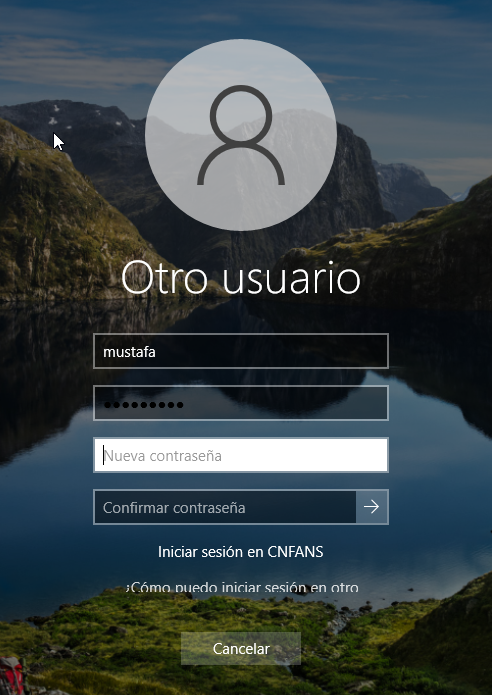
Si no es compleix alguna condició, apareixerà un missatge d’error indicant quins requisits no s’han respectat.
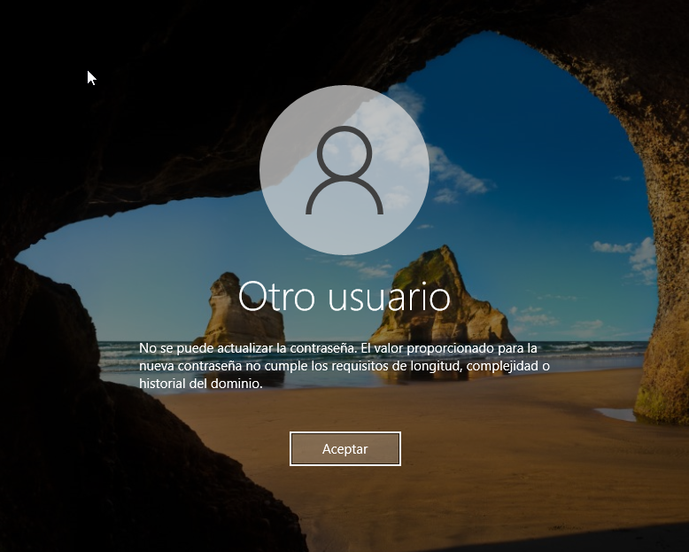
Com podem veure ara si compleix amb tots els requisits definits
Compartir una carpeta o unitat de xarxa via GPO
Per compartir una carpeta o una unitat de xarxa automàticament amb els usuaris del domini mitjançant una GPO, primer cal crear la carpeta (per exemple C:\Share) i compartir-la manualment, donant permisos als usuaris o grups del domini.
Un cop compartida, obre la consola gpmc.msc des del controlador de domini, edita o crea una nova GPO, i ves a Configuració de l'usuari > Preferències > Configuració de Windows > Unitat de xarxa. Allà, crea una nova unitat, tria l’acció Crear, posa com a ubicació \\Exemple\Share, assigna una lletra (com Z:) i marca Reconnectar si vols que es mantingui després de reinicis.
Així, cada cop que un usuari afectat per la GPO iniciï sessió, se li muntarà automàticament la unitat compartida.
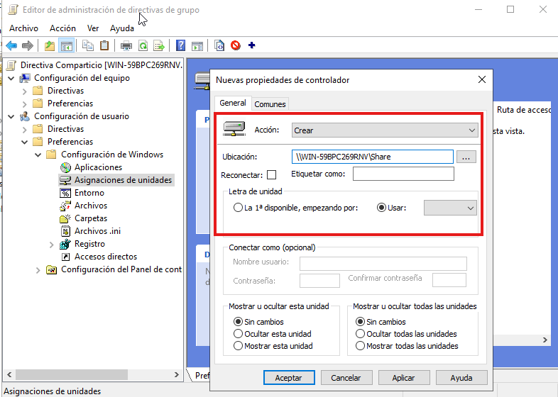
Si tot s’ha configurat correctament, quan l’usuari iniciï sessió veurà la nova unitat de xarxa a l’Explorador de fitxers, identificada amb la lletra assignada (per exemple, Z:), una icona de carpeta amb un triangle verd al damunt. Aquest símbol indica que la política de grup s’ha aplicat amb èxit i que la connexió a la unitat compartida està activa.
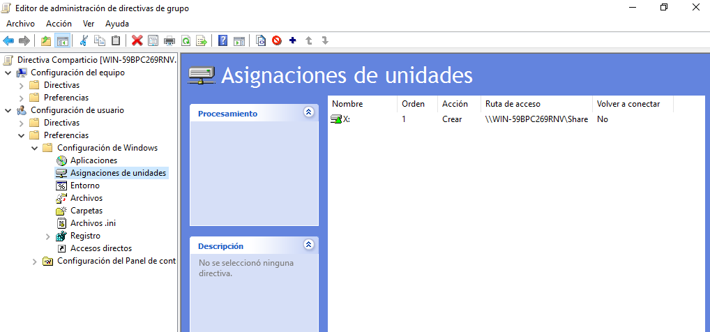
Ara només cal iniciar sessió amb un usuari en un equip que estigui unit al domini, i automàticament es muntarà la unitat de xarxa que hem configurat mitjançant la GPO, sense necessitat de fer res manualment.
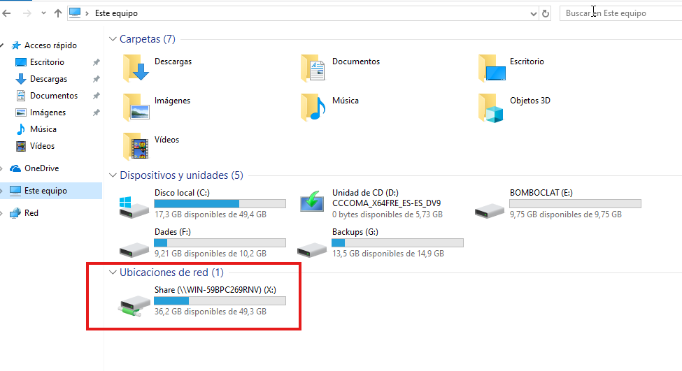
GPO per canviar el fons a un grup concret
També podem aplicar polítiques de grup (GPO) de manera selectiva a usuaris o grups específics. Per exemple, si tenim un grup restrictiu i un grup permisiu, és possible assignar una GPO diferent a cadascun, adaptant les restriccions o permisos segons les seves funcions. Això es fa mitjançant filtratge de seguretat dins de la GPO, especificant quins grups poden rebre i aplicar la política.
En aquest cas farem que el grup restrictiva tingue un fons definit per la gpo i el grup
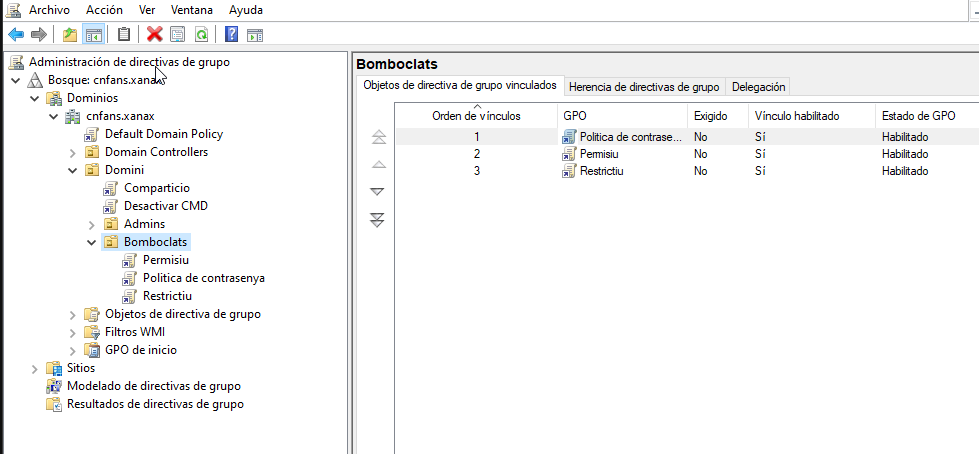
Per configurar el fons d’escriptori mitjançant una GPO, fes clic dret sobre la GPO que vols aplicar (per exemple, la del grup Restrictiu) i selecciona Editar. A continuació, segueix aquesta ruta:
Configuració de l'usuari → Plantilles administratives → Escriptori → Escriptori
Un cop allà, obre la política "Desktop Wallpaper" o "Fons d’escriptori", activa-la i introdueix la ruta completa on es troba la imatge (per exemple: \\SERVIDOR\Share\fons.jpg). També pots escollir l'estil (ajustar, omplir, centrar, etc.) perquè s’adapti correctament. Així, el fons s'aplicarà automàticament als usuaris afectats per aquesta GPO quan iniciïn sessió.
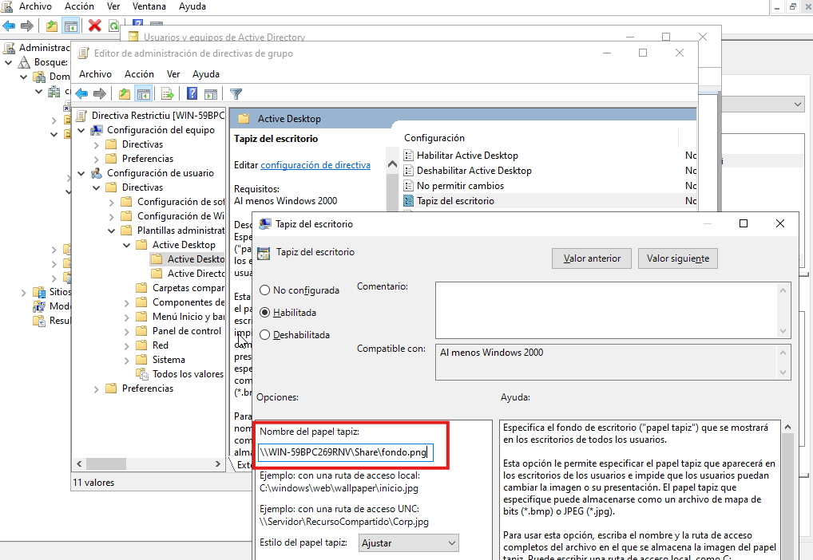
Finalment, per assegurar que només els membres del grup Restrictiu rebin aquesta configuració, editem la GPO i fem el filtratge de seguretat. A la pestanya Delegation, fem clic a Advanced, eliminem el grup Authenticated Users si cal, i afegim el grup Restrictiu amb permís de Read i Apply Group Policy. Així, només aquest grup aplicarà la política quan iniciï sessió.
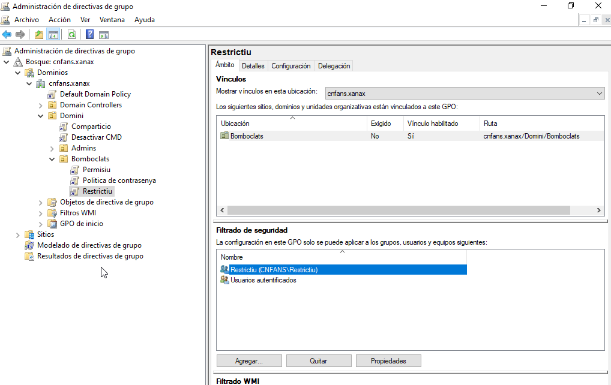
Resultats:
- L’usuari Mustafa, que forma part del grup Restrictiu, té aplicat correctament el fons d’escriptori personalitzat segons la GPO.
- L’usuari Abdul, que no és membre d’aquest grup, manté el seu fons per defecte, ja que la política no se li aplica.
Això confirma que les GPOs es poden aplicar de manera selectiva, permetent una gestió més precisa i una millor experiència per a cada perfil d’usuari dins del domini.
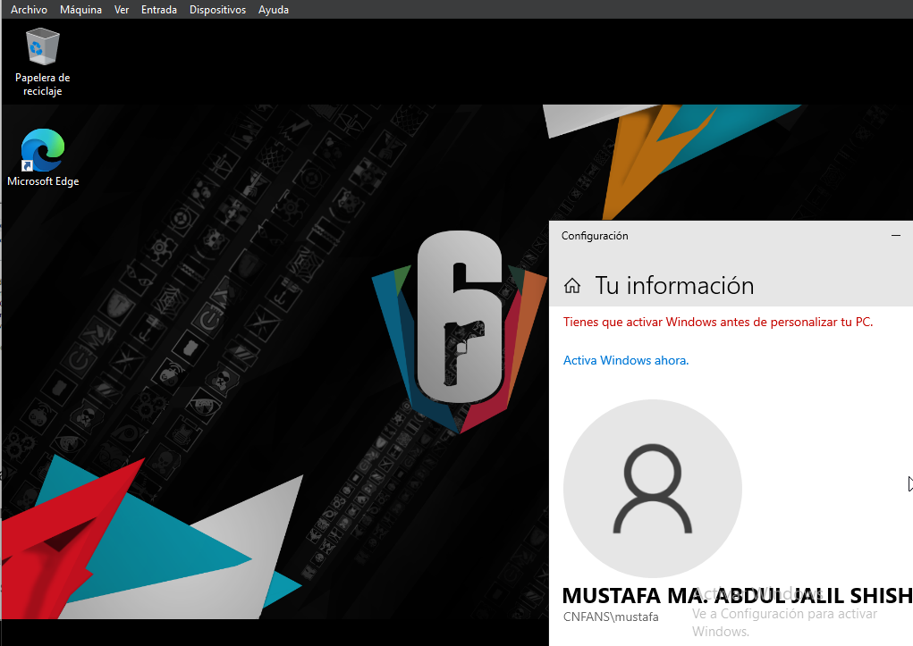
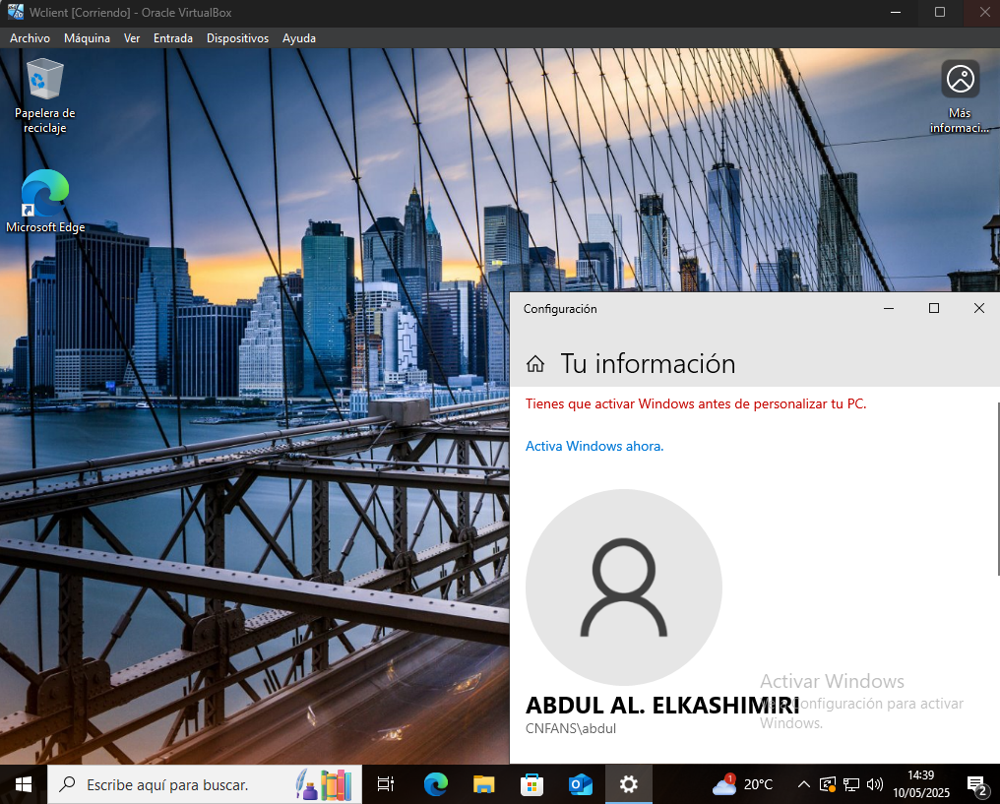